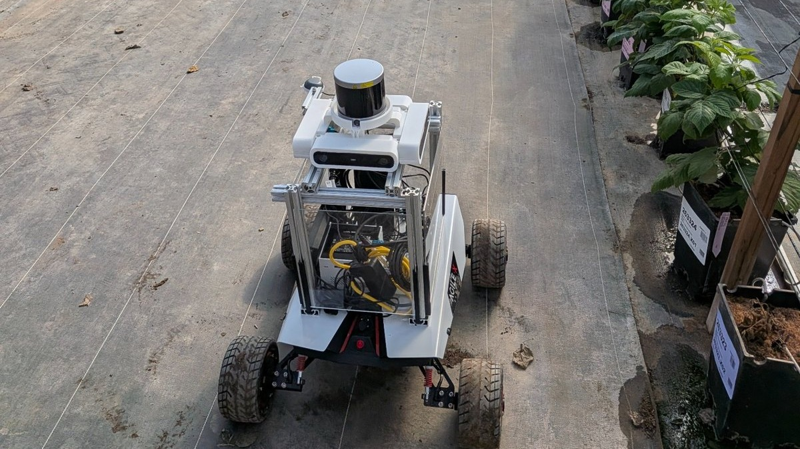

The challenge
My contributions
Technical approach
Evidence & outcomes
Project photographs and technical documentation will be added as approved.
Project gallery
Additional project photographs and documentation will be added here.
I'm Moises Sosa González, a UCLA aerospace engineering student working at the intersection of robotic systems, mechanical design, experimental research, and manufacturing.

A selection of engineering work spanning agricultural robotics, composite manufacturing, and experimental mechanics.
I'm a fourth-year Aerospace Engineering student at UCLA, working across mechanical design, robotics, experimental mechanics, and manufacturing. My favorite engineering problems live between disciplines—where CAD models, sensors, electronics, software, and physical behavior must come together in a functioning system.
At UCLA, I've worked on autonomous agricultural robotics and robot-assisted experiments on deformable materials. As Manufacturing Lead at Bearospace, I also gained hands-on experience turning rocket designs into composite hardware.
My interests include aerospace structures, robotics integration, computational mechanics, and design for manufacturability. I enjoy learning unfamiliar systems, building prototypes, and improving them through testing.
Skills supported by the selected projects and prior engineering work; proficiency varies by tool.
Experimental robotics, nonlinear mechanics, and collaborative computational research.
Developed and extended robotic experiments using a 7-DoF Sawyer manipulator, camera-based tracking, and automated data capture to support research on flexible and deformable materials.
Explore Sawyer research ↗Co-author on a manuscript listed in my résumé as a NeurIPS 2026 submission. Publication details and links will be added only when publicly released.
Co-author on a research manuscript listed as submitted in my résumé. Technical details and unpublished results are intentionally omitted.
Interested in internships, engineering research, and opportunities involving robotics, aerospace structures, mechanical design, and experimental systems.
moisessosa1125@gmail.comProject photographs and technical documentation will be added as approved.
Additional project photographs and documentation will be added here.